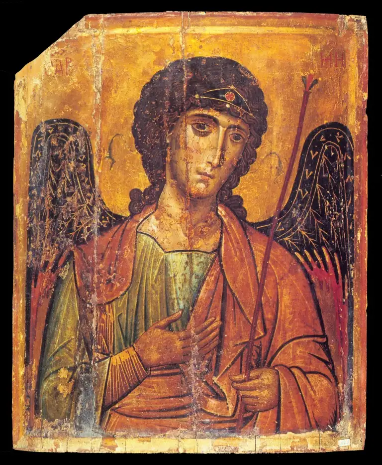

01 “Who is like God?”

The Hebrew name Mi-ka-El is a question: “Who is like God?”. According to Tradition, this was Michael’s cry when Lucifer, the brightest of the angels, rebelled in pride and sought to make himself equal to God. The archangel’s very name is a confession of faith and a lesson in humility.
Key points
- Archangel means “chief messenger”: angels are first of all God’s envoys.
- The Church calls him Archistrategos, the supreme commander of the heavenly hosts.
- Orthodox Tradition names seven archangels: Michael, Gabriel, Raphael, Uriel, Selaphiel, Jegudiel and Barachiel.
- Angels are bodiless spirits, the “bodiless powers”, arranged according to St Dionysius the Areopagite in nine choirs, from the Seraphim to the Angels.